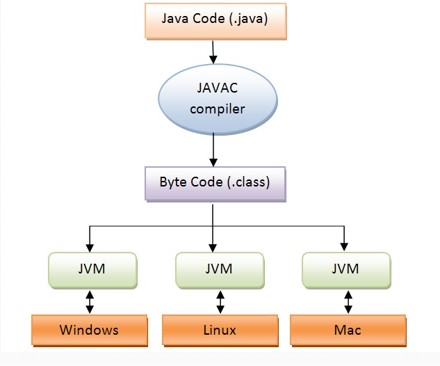

Introdução à Linguagem Java
Introdução
Java é uma linguagem de programação e plataforma de computação lançada pela Sun Microsystems em 1995. Java é uma linguagem de programação orientada a objetos de propósito geral, baseada em classes, projetada para ter dependências de implementação menores. É uma plataforma de computação para desenvolvimento de aplicativos. Java é rápido, seguro e confiável. Portanto, é amplamente utilizado para o desenvolvimento de aplicativos Java em laptops, data centers, consoles de jogos, supercomputadores científicos, telefones celulares, etc.

Características do Java
Entre as principais características da linguagem Java, destacam-se:
- Orientada a Objetos: Java é baseada em conceitos de orientação a objetos, como encapsulamento, herança e polimorfismo.
- Portabilidade: O slogan "Escreva uma vez, execute em qualquer lugar" reflete sua capacidade de rodar em diferentes plataformas, graças à Java Virtual Machine (JVM).
- Simplicidade: Java foi projetado para ser fácil de entender e usar, eliminando complexidades de outras linguagens, como C++.
- Segurança: Java possui várias características de segurança, como gerenciamento de memória, execução em sandbox e verificação de bytecode.
- Multithreading: Suporte nativo para a execução de múltiplos threads, permitindo aplicações mais responsivas e eficientes.
- Garbage Collection: Gerenciamento automático de memória, que ajuda a evitar vazamentos e a liberar recursos não utilizados.
Portabilidade
Java permite que os desenvolvedores escrevam o código uma vez e executem em qualquer lugar graças à sua arquitetura baseada em bytecode e à Java Virtual Machine (JVM). Isso significa que, após compilar um programa Java, o código gerado (bytecode) pode ser executado em qualquer dispositivo que tenha uma JVM compatível. Essa capacidade de execução em diferentes plataformas sem a necessidade de recompilar o código para cada uma delas é um grande benefício.
Isso é possível graças à Java Virtual Machine (JVM).
Boas Práticas de Programação
Para programar em Java de forma eficaz, é importante seguir boas práticas como:
Uso de Nomes Significativos
Os nomes de variáveis e métodos devem ser descritivos para facilitar a compreensão do código e a colaboração entre desenvolvedores. Aqui estão algumas diretrizes para garantir o uso de nomes significativos:
- Seja Descritivo: Escolha nomes que reflitam claramente o propósito ou a função da variável ou método. Por exemplo, em vez de usar x, utilize totalVendas para uma variável que armazena o total de vendas.
- Use Verbos para Métodos: Para métodos, comece o nome com um verbo que descreva a ação que o método realiza. Por exemplo, calcularDesconto() ou enviarEmail().
- Consistência na Nomenclatura: Siga convenções de nomenclatura estabelecidas, como camelCase para variáveis e métodos, e PascalCase para classes. Isso ajuda a manter um padrão e melhora a legibilidade.